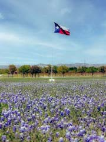

Charissa Maes
About Me
My name is Charissa and I live in the USA. I grew up traveling the world with my family. I am married with 3 sons, 2 daughter-in-laws, 1 grand-baby and another one on the way. I love my family more than anything. I have a testimony that God loves and knows me. He sent His son Jesus Christ who is our advocate to the Father, our brother, our Savior. He suffered the pains of sin and of the world. He and only He can know what we are experiencing in this world and I feel of His love in my life. He has carried me, walked beside me, comforted me, rejoiced with me and I continue to try to follow His example so that I can return to live with Him again.
Texas USA
I currently live in the great state of Texas. We have many different climates here ranging from the desert, tropical beaches and green rolling hills. The beautiful bluebonnet flower, as seen in the picture, is the state flower and in the Spring you can see fields of it everywhere. In Texas we have real cowboys and cowgirls who live and work very hard on ranches raising and herding cattle including the legendary Texas Longhorns whose horns can span tip to tip between 3-6ft wide. We can have wild weather and if you live here then put your cowboy hat and boots on and hang on for the ride.
